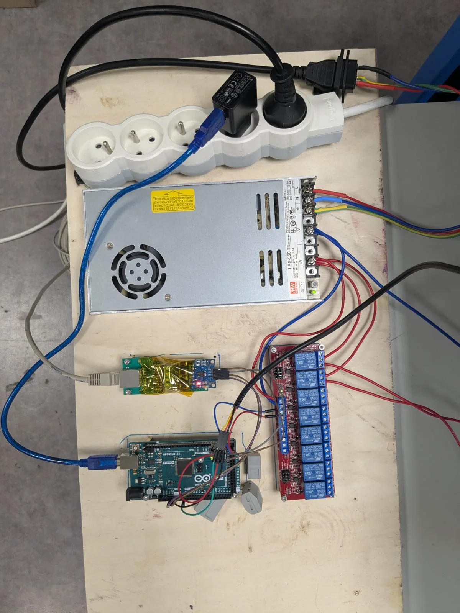
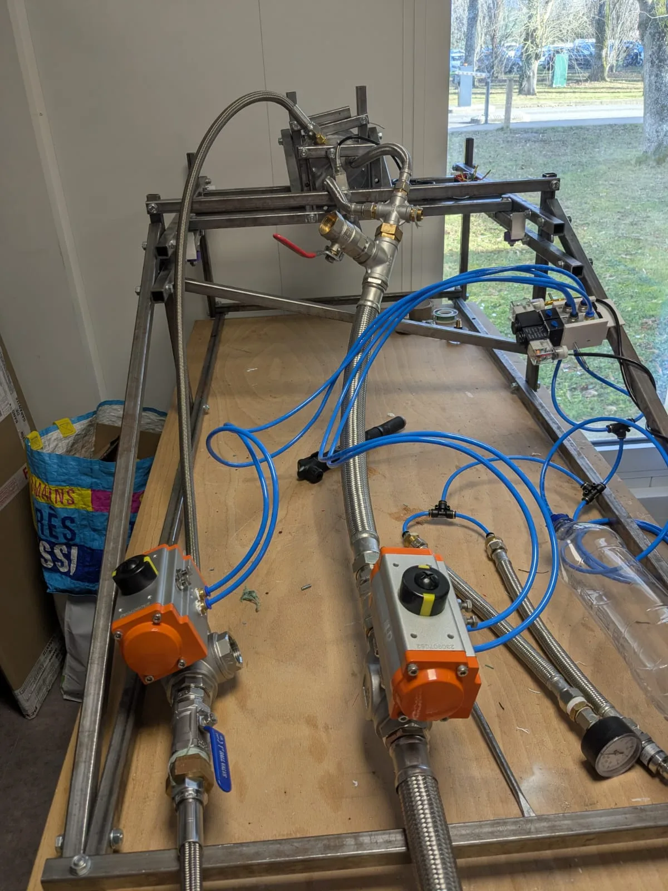
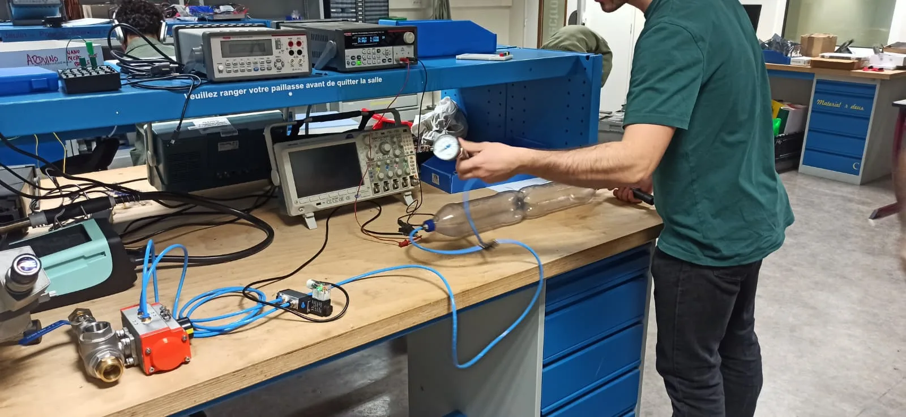

Liquid Propellant Rocket Engine
I've been working for the past year on a liquid propellant rocket engine. A previous generation of students made a nozzle, injector, and prototyped a test bench. I improved and instrumented the test bench, designed and built the pneumatic system to manage pressure in the tanks, and made a centralized electronics unit to monitor and pilot operation from a safe distance.
Current status: many tests done with water, propellant ordered for the final test
Accomplishments
- Designed and built a reliable communication system between the on-site sensors/actuators and a distant control station
- Designed and built a pneumatic system able to pressurize propellant tanks to 300 psi and remotely open them
- Integrated a dozen sensors (thermocouples, pressure sensors, strain gauges) to monitor engine health
Skills
Gallery





